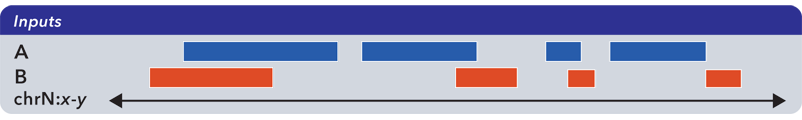
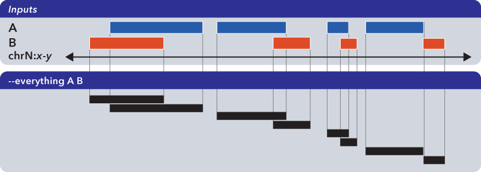

5.1.1. bedops¶
Finding relationships between two or more genomic datasets is an important problem.
As examples, one might want to:
- Know how much overlap exists between the elements of two datasets, to quantitatively establish the degree to which they are similar
- Merge or filter elements. For example, retrieving non-overlapping, “unique” elements from multiple BED files.
- Split elements from multiple BED files into disjoint subsets.
The bedops program offers several Boolean set and multiset operations, including union, subset, and difference, to assist investigators with answering these types of questions.
Importantly, bedops handles any number of any-size inputs at once when computing results in order to maximize efficiency. This use case has serious practical consequences for many genomic studies.
One can also use bedops to symmetrically or asymmetrically pad coordinates.
5.1.1.1. Inputs and outputs¶
5.1.1.1.1. Input¶
The bedops program reads sorted BED data and BEDOPS Starch-formatted archives as input.
Finally, bedops requires specification of a set operation (and, optionally, may include modifier options).
Support for common headers (including UCSC track headers) is offered through the --header option. Headers are stripped from output.
5.1.1.2. Usage¶
The bedops program takes sorted BED-formatted data as input, either from a file or streamed from standard input. It will process any number of input files in parallel.
If your data are unsorted, use BEDOPS sort-bed to prepare data for bedops. You only need to sort once, as all BEDOPS tools read and write sorted BED data.
Because memory usage is very low, one can use sorted inputs of any size. Processing times generally follow a simple linear relationship with input sizes (e.g., as the input size doubles, the processing time doubles accordingly).
The --help option describes the set operation and other options available to the end user:
bedops
citation: http://bioinformatics.oxfordjournals.org/content/28/14/1919.abstract
version: 2.2.0
authors: Shane Neph & Scott Kuehn
USAGE: bedops [process-flags] <operation> <File(s)>*
Every input file must be sorted per the sort-bed utility.
Each operation requires a minimum number of files as shown below.
There is no fixed maximum number of files that may be used.
Input files must have at least the first 3 columns of the BED specification.
The program accepts BED and starch file formats.
May use '-' for a file to indicate reading from standard input (BED format only).
Process Flags:
--chrom <chromosome> Process data for given <chromosome> only.
--ec Error check input files (slower).
--header Accept headers (VCF, GFF, SAM, BED, WIG) in any input file.
--help Print this message and exit successfully.
--help-<operation> Detailed help on <operation>.
An example is --help-c or --help-complement
--range L:R Add 'L' bp to all start coordinates and 'R' bp to end
coordinates. Either value may be + or - to grow or
shrink regions. With the -e/-n operations, the first
(reference) file is not padded, unlike all other files.
--range S Pad input file(s) coordinates symmetrically by S.
This is shorthand for: --range -S:S.
--version Print program information.
Operations: (choose one of)
-c, --complement [-L] File1 [File]*
-d, --difference ReferenceFile File2 [File]*
-e, --element-of [-number% | -number (in bp)] ReferenceFile File2 [File]*
by default, -e -100% is used.
-i, --intersect File1 File2 [File]*
-m, --merge File1 [File]*
-n, --not-element-of [-number% | -number (in bp)] ReferenceFile File2 [File]*
by default, -n -100% is used.
-p, --partition File1 [File]*
-s, --symmdiff File1 File2 [File]*
-u, --everything File1 [File]*
Example: bedops --range 10 -u file1.bed
NOTE: Only operations -e|n|u preserve all columns (no flattening)
Extended help is available for all operations in bedops. For example, the --help-symmdiff option in bedops gives detailed information on the --symmdiff operation.
5.1.1.3. Operations¶
To demonstrate the various operations in bedops, we start with two simple datasets A and B, containing genomic elements on generic chromsome chrN:
These datasets can be sorted BED or Starch-formatted files or streams.
5.1.1.3.1. Everything (-u, –everything)¶
The --everything option is equivalent to concatenating and sorting BED elements from multiple files, but works much faster:
Note
The --everything option preserves all columns from all inputs. This is useful for datasets with additional ID, score or other metadata.